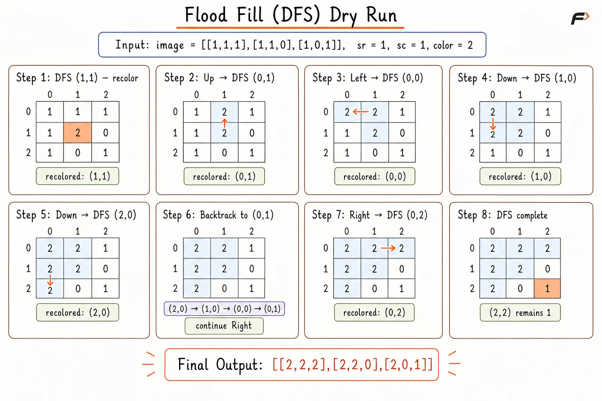
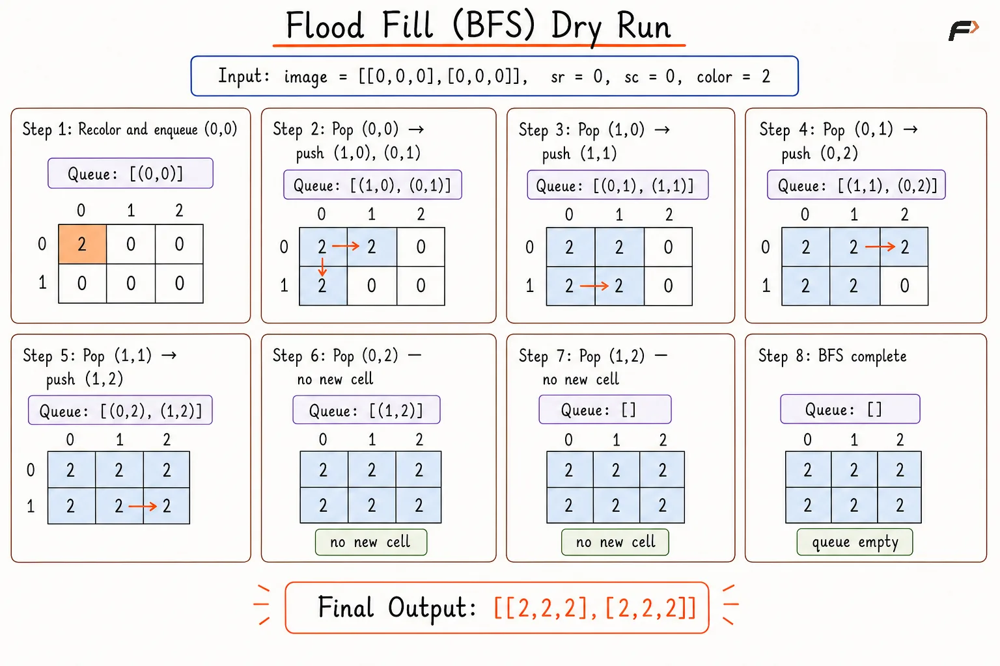

Flood Fill Algorithm
Given a 2D image represented by a matrix of integers, a starting cell (sr, sc) in the grid, and a new color, recolor the entire connected region containing the starting cell.
A cell belongs to the connected region if it has the same original color as the starting cell and can be reached from (sr, sc) by moving up, down, left, or right. Diagonal movement is not allowed.
Here, sr represents the starting row and sc represents the starting column of the cell in the grid.
Example 1
Input: image = [[1,1,1],[1,1,0],[1,0,1]], sr = 1, sc = 1, color = 2
Output: [[2,2,2],[2,2,0],[2,0,1]]
Explanation: The starting cell has color 1. All horizontally or vertically connected cells with color 1 are recolored to 2.
Example 2
Input: image = [[0,0,0],[0,0,0]], sr = 0, sc = 0, color = 2
Output: [[2,2,2],[2,2,2]]
Explanation: Every cell belongs to the same connected region, so every cell becomes 2.
Approach 1
Depth First Search begins from the given cell and recursively explores adjacent cells in the four directions. A neighboring cell belongs to the connected region only when the cell lies within the matrix boundaries and contains the original color.
Recoloring a cell before visiting neighboring cells also marks the cell as processed. An early return when oldColor == newColor prevents repeated recursive visits because recoloring would otherwise produce no visible state change.
Algorithm
Store the color of the starting cell in
oldColor, allowing every connected cell with the original color to be identified.Compare
oldColorwithnewColor. Equal values require no modification, so return the original image and avoid unnecessary recursive traversal.Start DFS from the given row and column to explore the connected region containing the starting cell.
End the current DFS call when the row or column lies outside the matrix or when the current cell does not contain
oldColor, since such a cell cannot belong to the required region.Change the current cell to
newColorbefore exploring adjacent cells. Early recoloring marks the cell as processed and prevents repeated visits.Continue DFS in the upward, downward, left, and right directions to recolor every connected cell containing
oldColor.Return the modified image after the DFS traversal finishes.
Dry Run

flood-fill-dfs-code-corrected
Solution
#include <bits/stdc++.h>
using namespace std;
class Solution {
private:
// Recolors all connected cells having the original color.
void dfs(int row, int col, vector<vector<int>>& image, int oldColor, int newColor) {
int rows = image.size();
int cols = image[0].size();
// Base case: stop if the cell is outside the image.
if (row < 0 || row >= rows || col < 0 || col >= cols) {
return;
}
// Base case: stop if the cell does not have the old color.
if (image[row][col] != oldColor) {
return;
}
// Recolor the current cell.
image[row][col] = newColor;
// Move to the upper cell.
dfs(row - 1, col, image, oldColor, newColor);
// Move to the lower cell.
dfs(row + 1, col, image, oldColor, newColor);
// Move to the left cell.
dfs(row, col - 1, image, oldColor, newColor);
// Move to the right cell.
dfs(row, col + 1, image, oldColor, newColor);
}
public:
// Applies flood fill starting from the given cell.
vector<vector<int>> floodFill(vector<vector<int>>& image, int sr, int sc, int color) {
int oldColor = image[sr][sc];
// If the new color is the same, no change is needed.
if (oldColor == color) {
return image;
}
// Start DFS from the given cell.
dfs(sr, sc, image, oldColor, color);
// Return the updated image.
return image;
}
};
// Driver code.
int main() {
vector<vector<int>> image = {
{1, 1, 1},
{1, 1, 0},
{1, 0, 1}
};
int sr = 1;
int sc = 1;
int color = 2;
Solution sol;
vector<vector<int>> result = sol.floodFill(image, sr, sc, color);
// Print the updated image.
for (vector<int>& row : result) {
for (int value : row) {
cout << value << " ";
}
cout << "\n";
}
return 0;
}Complexity Analysis
Time Complexity: O(R×C), where R and C are the numbers of rows and columns; every matrix cell is visited at most once.
Space Complexity: O(R×C), where the recursive DFS stack can contain up to R×C cells in the worst case.
Approach 2
Breadth First Search expands the connected region iteratively using a queue. The starting cell enters the queue first, followed by every valid neighboring cell containing the original color.
Recoloring each eligible cell before queue insertion prevents duplicate entries. An early return when oldColor == newColor avoids repeated processing when recoloring cannot mark cells as visited.
Algorithm
Store the color of the starting cell in
oldColor, allowing connected cells belonging to the original region to be recognized.Compare
oldColorwithnewColor. Equal values require no modification, so return the original image and avoid unnecessary queue processing.Recolor the starting cell and add the corresponding coordinates to a queue. Recoloring before insertion marks the cell as processed.
Continue processing while the queue contains cells, ensuring that the complete connected region is explored.
Remove the front cell and examine the neighboring cells in the upward, downward, left, and right directions.
For every in-bounds neighbor containing
oldColor, change the color tonewColorbefore adding the coordinates to the queue. Early recoloring prevents duplicate queue entries.Return the modified image after the queue becomes empty.
Dry Run

flood-fill-bfs-code-corrected
Solution
#include <bits/stdc++.h>
using namespace std;
class Solution {
public:
// Applies flood fill starting from the given cell using BFS.
vector<vector<int>> floodFill(vector<vector<int>>& image, int sr, int sc, int color) {
int rows = image.size();
int cols = image[0].size();
int oldColor = image[sr][sc];
// If the new color is the same, no change is needed.
if (oldColor == color) {
return image;
}
vector<int> deltaRow = {-1, 1, 0, 0};
vector<int> deltaCol = {0, 0, -1, 1};
queue<pair<int, int>> q;
// Recolor the starting cell.
image[sr][sc] = color;
// Push the starting cell into the queue.
q.push({sr, sc});
// Recolor all connected cells having the original color.
while (!q.empty()) {
pair<int, int> cell = q.front();
q.pop();
// Explore all four adjacent directions.
for (int dir = 0; dir < 4; dir++) {
int nextRow = cell.first + deltaRow[dir];
int nextCol = cell.second + deltaCol[dir];
// Check if the next cell is inside the image.
if (nextRow >= 0 && nextRow < rows && nextCol >= 0 && nextCol < cols) {
// Recolor only cells that have the old color.
if (image[nextRow][nextCol] == oldColor) {
image[nextRow][nextCol] = color;
q.push({nextRow, nextCol});
}
}
}
}
// Return the updated image.
return image;
}
};
// Driver code.
int main() {
vector<vector<int>> image = {
{0, 0, 0},
{0, 0, 0}
};
int sr = 0;
int sc = 0;
int color = 2;
Solution sol;
vector<vector<int>> result = sol.floodFill(image, sr, sc, color);
// Print the updated image.
for (vector<int>& row : result) {
for (int value : row) {
cout << value << " ";
}
cout << "\n";
}
return 0;
}Complexity Analysis
Time Complexity: O(R×C), where R and C are the numbers of rows and columns; every matrix cell enters the queue at most once.
Space Complexity: O(R×C), where the queue can store up to R×C cell coordinates in the worst case.
Interview follow-up Questions
Standard flood fill uses horizontal and vertical movement only, unless a problem explicitly allows eight-direction movement.